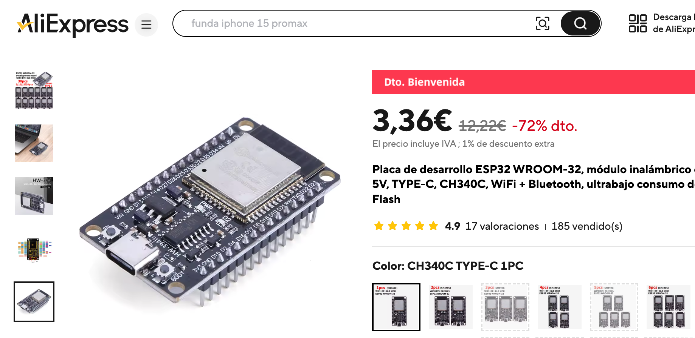

UD08 3. Mosquitto (mqtt)
¿Qué es mqtt?
MQTT, o Message Queueing Telemetry Transport, es un protocolo de mensajería ligero diseñado para la comunicación entre dispositivos con recursos limitados, como los de Internet de las Cosas (IoT). Es un protocolo de publicación/suscripción, lo que significa que los dispositivos (clientes) pueden enviar mensajes a un tema específico (publicar) y otros dispositivos pueden suscribirse a ese tema para recibir los mensajes (suscripción).
-
Ligero:
MQTT está diseñado para funcionar en dispositivos con poca memoria y bajo consumo de energía, lo que lo hace ideal para dispositivos IoT. -
Eficiente:
La arquitectura de publicación/suscripción de MQTT permite una comunicación bidireccional eficiente y escalable. -
Flexible:
MQTT puede funcionar sobre TCP/IP y otros protocolos de red. -
Seguro:
MQTTs, que es MQTT con SSL/TLS, proporciona una capa de seguridad adicional para proteger la comunicación. -
Escalable:
MQTT puede manejar grandes cantidades de dispositivos y mensajes, lo que lo convierte en una buena opción para proyectos IoT a gran escala.
Aplicaciones de MQTT:
- IoT:
MQTT es ampliamente utilizado en aplicaciones IoT para conectar sensores, dispositivos de control y otros dispositivos con la nube.
-
Automatización industrial:
MQTT se utiliza para la comunicación entre dispositivos de automatización industrial, como robots y sistemas de control. -
Domótica:
MQTT se utiliza para controlar dispositivos del hogar inteligente, como luces, termóstatos y otros. -
Telemetría:
MQTT se utiliza para transmitir datos de telemetría de dispositivos a un sistema central.
En resumen, MQTT es un protocolo de mensajería ligero, eficiente y flexible que se utiliza para conectar dispositivos en una variedad de aplicaciones, especialmente en el ámbito del IoT.
¿Cómo funciona MQTT?
https://aws.amazon.com/es/what-is/mqtt/
- Un cliente MQTT establecer una conexión con el agente MQTT.
- Una vez conectado, el cliente puede publicar mensajes, suscribirse a mensajes específicos o hacer ambas cosas.
- Cuando el agente MQTT recibe un mensaje, lo reenvía a los suscriptores que están interesados.
Tema de MQTT
El término “tema” se refiere a las palabras clave que utiliza el agente MQTT a fin de filtrar mensajes para los clientes de MQTT. Los temas están organizados jerárquicamente, de forma similar a un directorio de archivos o carpetas. Por ejemplo, considere un sistema doméstico inteligente que opera en una casa de varios pisos que tiene diferentes dispositivos inteligentes en cada uno de ellos. En ese caso, es posible que el agente MQTT organice temas como:
_ourhome/groundfloor/livingroom/light_
_ourhome/firstfloor/kitchen/temperature_
Publicación MQTT
Los clientes MQTT publican mensajes que contienen el tema y los datos en formato de bytes. El cliente determina el formato de los datos, como datos de texto, datos binarios, archivos XML o JSON. Por ejemplo, es posible que una lámpara del sistema doméstico inteligente publique un mensaje sobre el tema salón o luz.
Suscripción MQTT
Los clientes MQTT envían un mensaje SUBSCRIBE (SUBSCRIBIRSE) al agente MQTT para recibir mensajes sobre temas de interés. Este mensaje contiene un identificador único y una lista de suscripciones. Por ejemplo, la aplicación de hogar inteligente en su teléfono quiere mostrar cuántas luces están encendidas en casa. Se suscribirá a la luz del tema y aumentará el contador para todos los mensajes activados.
Código ejemplo
Podemos utilizar mqtt desde nuestro propio servidor (a través de docker por ejemplo) o utilizando servidores públicos, en este ejemplo utilizaremos un servidor público broker.emqx.io
En él crearemos un topic "propio" para poder capturar los mensajes que llegan.
Este servidor público no tiene autenticación, por lo que no necesitamos user - pass.
Crea los siguientes archivos en una carpeta llamada mqtt.
Vamos a trabajar en un venv (hay un archivo que lo indica, requrements.txt)
ATENCIÓN
Modifica el topic con tu nombre, así accederás solamente a tus mensajes.
iabdEduardoPrimoMINOMBRE
'''consumer.py'''
import random
from paho.mqtt import client as mqtt_client
from config import broker, port, topic
client_id = f'subscribe-{random.randint(0, 10000)}'
# username = 'emqx'
# password = 'public'
def connect_mqtt() -> mqtt_client:
def on_connect(client, userdata, flags, rc):
if rc == 0:
print("Connected to MQTT Broker!")
else:
print("Failed to connect, return code %d\n", rc)
client = mqtt_client.Client(client_id)
# client.username_pw_set(username, password)
client.on_connect = on_connect
client.connect(broker, port)
return client
def subscribe(client: mqtt_client):
def on_message(client, userdata, msg):
print(f"Received `{msg.payload.decode()}` from `{msg.topic}` topic")
client.subscribe(topic)
client.on_message = on_message
def run():
client = connect_mqtt()
subscribe(client)
client.loop_forever()
if __name__ == '__main__':
run()
'''publisher.py'''
# python 3.11
import random
import time
from paho.mqtt import client as mqtt_client
from config import broker, port, topic
client_id = f'publisher-{random.randint(0, 1000)}'
# username = 'josep'
# password = '123123'
def connect_mqtt():
def on_connect(client, userdata, flags, rc):
if rc == 0:
print("Connected to MQTT Broker!")
else:
print("Failed to connect, return code %d\n", rc)
client = mqtt_client.Client(client_id)
client.enable_logger()
# client.username_pw_set(username, password)
client.on_connect = on_connect
client.connect(broker, port)
return client
def publish(client):
msg_count = 1
while True:
time.sleep(1)
msg = f"messages: {msg_count}"
result = client.publish(topic, msg)
# result: [0, 1]
status = result[0]
if status == 0:
print(f"Send `{msg}` to topic `{topic}`")
else:
print(f"Failed to send message to topic {topic}")
msg_count += 1
if msg_count > 5:
break
def run():
client = connect_mqtt()
client.loop_start()
publish(client)
client.loop_stop()
if __name__ == '__main__':
run()
Ejecuta en diferentes terminales el consumer y después el publisher.
Ejercicio 1, vamos a añadir a nuestro sistema domótico un sensor de temperatura y humedad.
Modifica el proyecto, cambia el TOPIC.
https://wokwi.com/projects/430378144021081089
Ejercicio 2, añadimos a nuestro sistema domótico, al pulsar el botón se conectará y mandará un mensaje por mqtt del tipo "Alarma activada".
Extra, al pulsarlo otra vez el mensaje cambiará a "Alarma desactivada"
https://wokwi.com/projects/430378792170160129
Flashear esp32 "real"
